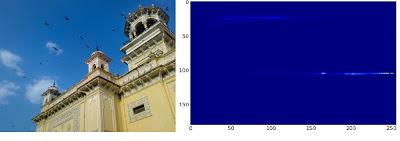
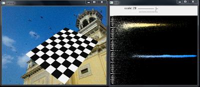

Histograms - 3 : 2D Histograms
Goal
In this chapter, we will learn to find and plot 2D histograms. It will be helpful in coming chapters.
Introduction
In the first article, we calculated and plotted one-dimensional histogram. It is called one-dimensional because we are taking only one feature into our consideration, ie grayscale intensity value of the pixel. But in two-dimensional histograms, you consider two features. Normally it is used for finding color histograms where two features are Hue & Saturation values of every pixel.
There is a python sample (samples/python/color_histogram.py) already for finding color histograms. We will try to understand how to create such a color histogram, and it will be useful in understanding further topics like Histogram Back-Projection.
2D Histogram in OpenCV
It is quite simple and calculated using the same function, cv2.calcHist(). For color histograms, we need to convert the image from BGR to HSV. (Remember, for 1D histogram, we converted from BGR to Grayscale). For 2D histograms, its parameters will be modified as follows:
- channels = [0,1] because we need to process both H and S plane.
- bins = [180,256] 180 for H plane and 256 for S plane.
- range = [0,180,0,256] Hue value lies between 0 and 180 & Saturation lies between 0 and 256.
Now check the code below:
import cv2 import numpy as np img = cv2.imread('home.jpg') hsv = cv2.cvtColor(img,cv2.COLOR_BGR2HSV) hist = cv2.calcHist([hsv], [0, 1], None, [180, 256], [0, 180, 0, 256])
That’s it.
2D Histogram in Numpy
Numpy also provides a specific function for this : np.histogram2d(). (Remember, for 1D histogram we used np.histogram()).
import cv2 import numpy as np from matplotlib import pyplot as plt img = cv2.imread('home.jpg') hsv = cv2.cvtColor(img,cv2.COLOR_BGR2HSV) hist, xbins, ybins = np.histogram2d(h.ravel(),s.ravel(),[180,256],[[0,180],[0,256]])
First argument is H plane, second one is the S plane, third is number of bins for each and fourth is their range.
Now we can check how to plot this color histogram.
Plotting 2D Histograms
Method - 1 : Using
The result we get is a two dimensional array of size 180x256. So we can show them as we do normally, using cv2.imshow() function. It will be a grayscale image and it won’t give much idea what colors are there, unless you know the Hue values of different colors.
Method - 2 : Using Matplotlib
We can use matplotlib.pyplot.imshow() function to plot 2D histogram with different color maps. It gives us a much better idea about the different pixel density. But this also, doesn’t gives us idea what color is there on a first look, unless you know the Hue values of different colors. Still I prefer this method. It is simple and better.
While using this function, remember, interpolation flag should be nearest for better results.
Consider code:
import cv2 import numpy as np from matplotlib import pyplot as plt img = cv2.imread('home.jpg') hsv = cv2.cvtColor(img,cv2.COLOR_BGR2HSV) hist = cv2.calcHist( [hsv], [0, 1], None, [180, 256], [0, 180, 0, 256] ) plt.imshow(hist,interpolation = 'nearest') plt.show()
Below is the input image and its color histogram plot. X axis shows S values and Y axis shows Hue.
In histogram, you can see some high values near H = 100 and S = 200. It corresponds to blue of sky. Similarly another peak can be seen near H = 25 and S = 100. It corresponds to yellow of the palace. You can verify it with any image editing tools like GIMP.
Method 3 : OpenCV sample style !!
There is a sample code for color-histogram in OpenCV-Python2 samples (samples/python/color_histogram.py). If you run the code, you can see the histogram shows the corresponding color also. Or simply it outputs a color coded histogram. Its result is very good (although you need to add extra bunch of lines).
In that code, the author created a color map in HSV. Then converted it into BGR. The resulting histogram image is multiplied with this color map. He also uses some preprocessing steps to remove small isolated pixels, resulting in a good histogram.
I leave it to the readers to run the code, analyze it and have your own hack arounds. Below is the output of that code for the same image as above:
You can clearly see in the histogram what colors are present, blue is there, yellow is there, and some white due to chessboard is there. Nice !!!
Additional Resources
Exercises